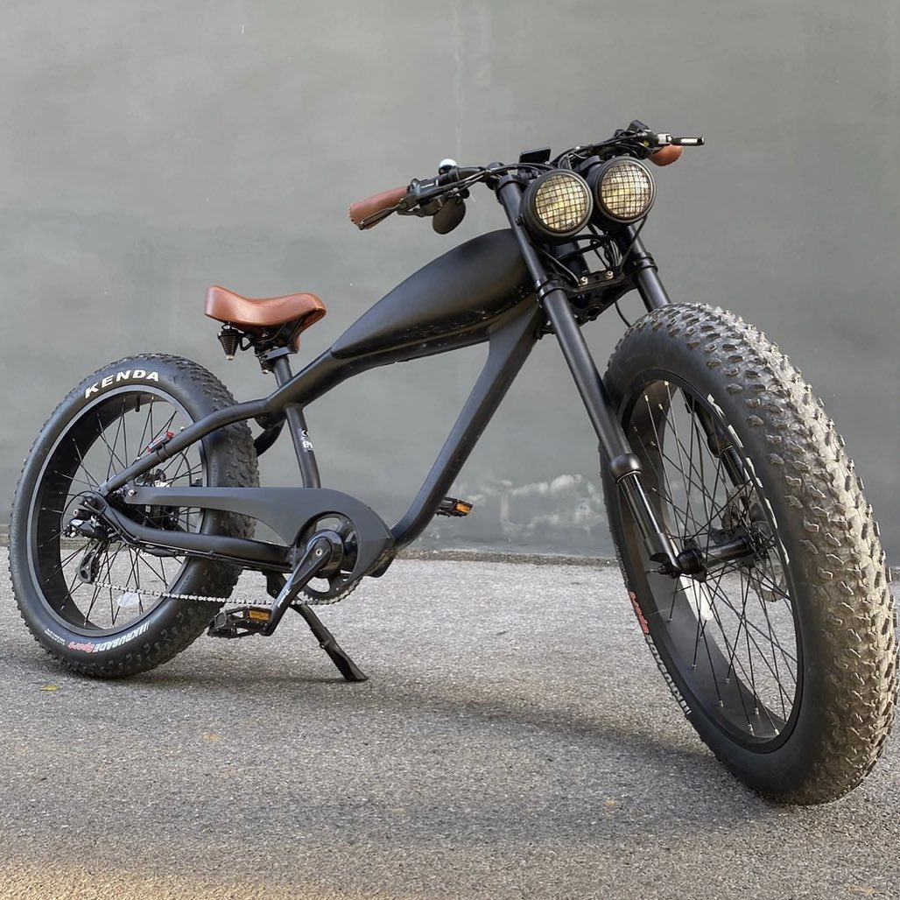
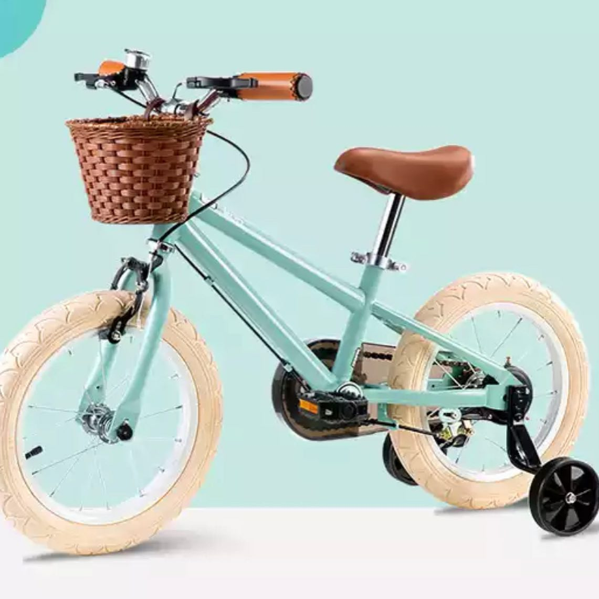
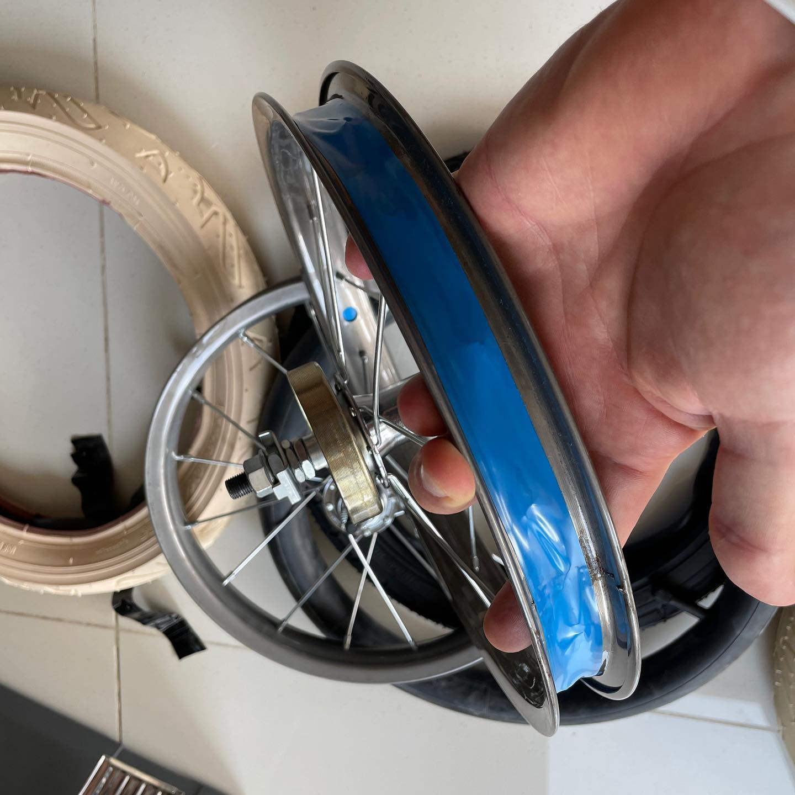
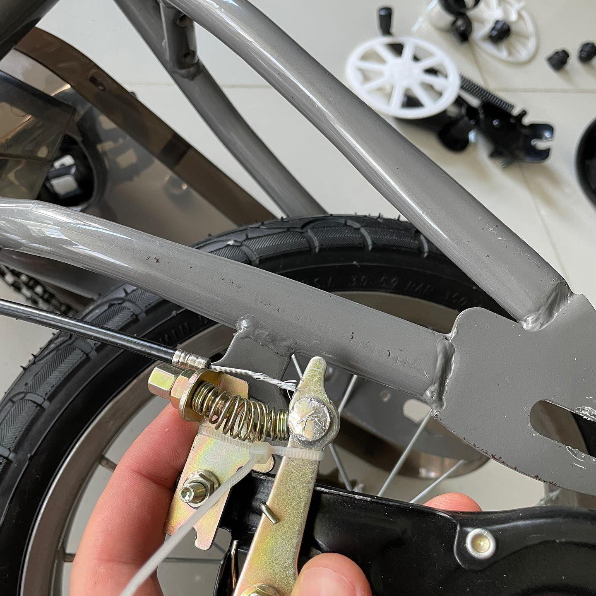
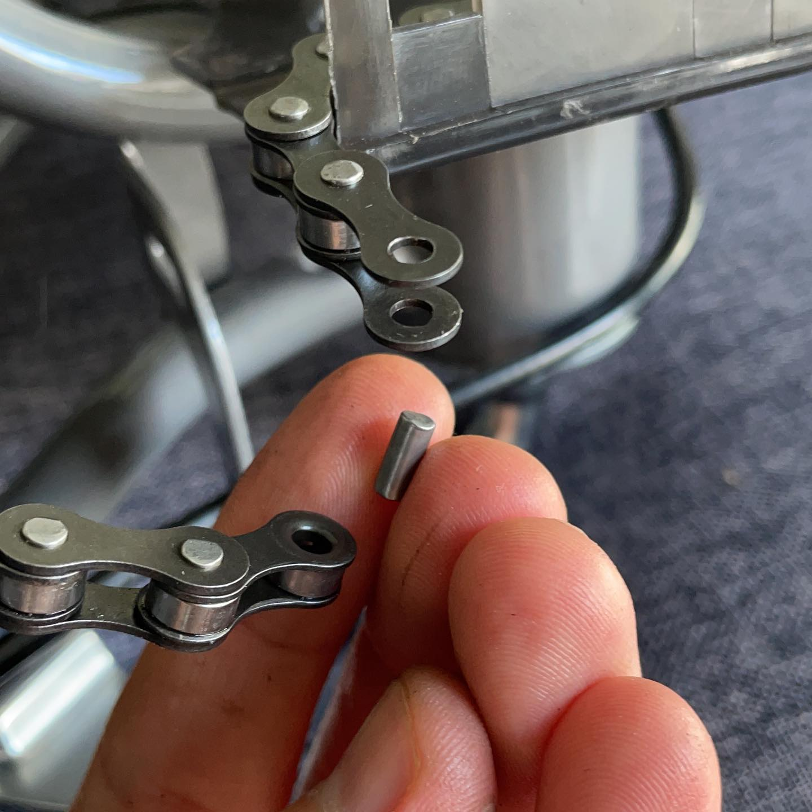
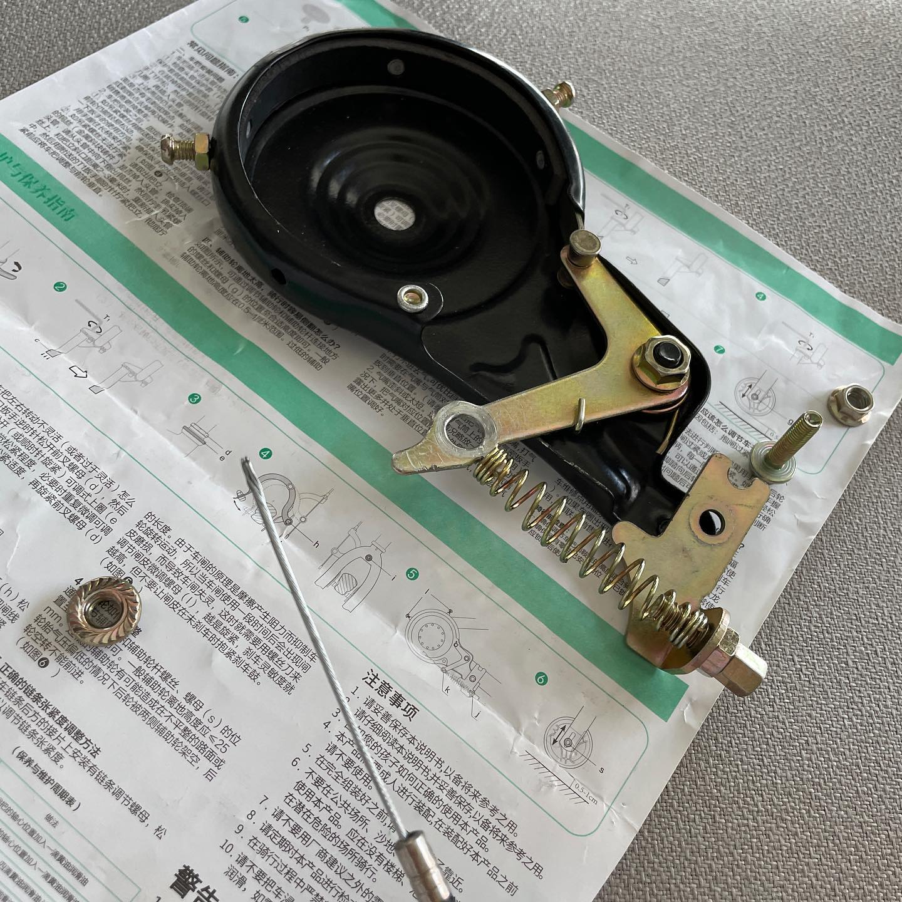
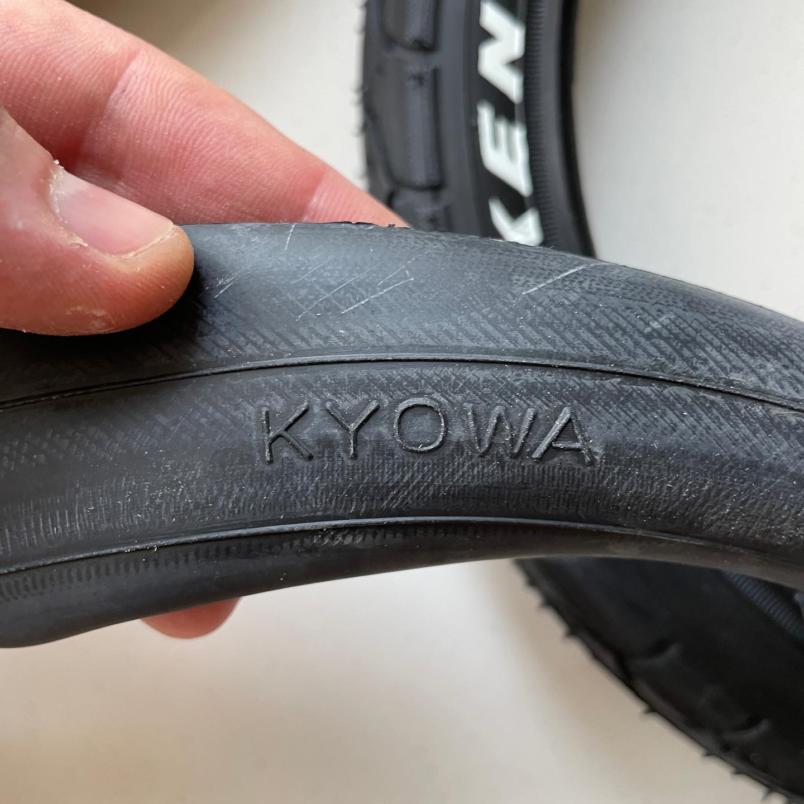
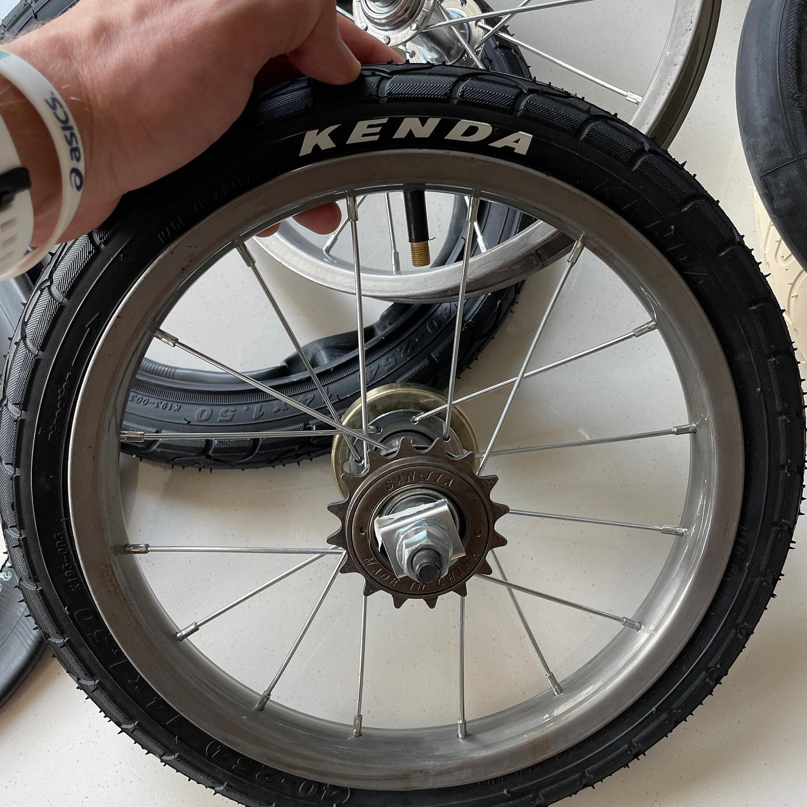
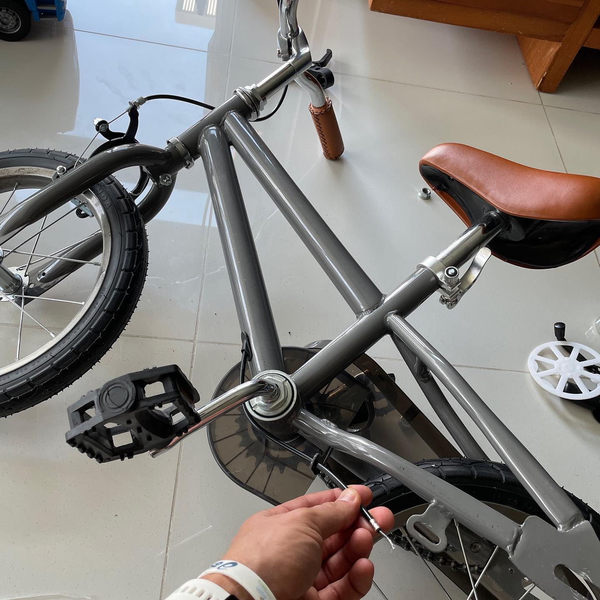

Welcome Mishka! #steelisreal , inner cable routing, @kendatire , and mandatory compliance to #Velominati rules 8, 26 and 40 . The other rules require rider who is yet to be taught!.. Name. Мишка is "Little bear" in Russian, and Arthur's name has Celtic origins with the same meaning - bear . He is indeed a little bear 🐻 in our family, so the name for the bike matches. Project. Inspired by @cooler__king chopper style e-bicycles. I bought an AliExpress semi-assembled bike and taken it to Ubin Khoo. Ubin, if you don't know Singapore cycling scene well, runs Grit Blasting (call them +65 9685 4473 ), and they are masters of dry abrasive cleaning. They've removed the mint-tiffany-green colour from the frame and white from the rims, and coated them with polyurethane. So what you see is a #steelisreal for sure, #nopaint 🤙 Then, I've found awkward ERTRO 242 #Kendatires . The rest was just a few dashes to assemble and to fix everything up while we're in lockdown and make sure that Arthur doesn't see it, including an introduction to crazy prehistoric #bandbrake 😄 ___ #firstbike #happybirthday #custommade #bicycle #singapore
2021-08-14 22:29:05
Back to main page